3.3 Centre of mass
Further Mechanics · particles · composite bodies · laminae · tipping
考生需要能够：
- 用 particle model 与 rigid body model 表示物体；
- 使用质量矩求一维、二维系统的 centre of mass；
- 用标准结果处理 uniform rod、lamina、disc、semicircle、sector、triangle 等物体；
- 用 composite body、removed part 和 negative mass/area 处理组合物体与挖孔问题；
- 判断悬挂时 centre of mass 与 suspension point 的相对位置；
- 判断物体滑动或翻倒，并使用 centre of mass 的竖直投影判断 tipping。
学习路线
1. 教材知识点
1.1 Centre of mass of particles
对于质量分别为 \(m_1,m_2,\ldots,m_n\)、坐标分别为 \(x_1,x_2,\ldots,x_n\) 的粒子系统，若总质量为 \(M\)，则
\[ M=\sum_i m_i, \qquad \boxed{\bar{x}=\frac{\sum_i m_ix_i}{\sum_i m_i}}. \]
等价地，关于任意参考点取矩：
\[ \boxed{M\bar{x}=\sum_i m_ix_i}. \]
质量可以用 weight 代替，因为每一项都乘有相同的 \(g\)。因此题目给出 weights 时，直接使用 weight moments 也可以。
1.2 Two-dimensional centre of mass
对于平面内的粒子或可分割的刚体，分别取关于 \(y\)-axis 和 \(x\)-axis 的 moments：
\[ \boxed{\bar{x}=\frac{\sum_i m_ix_i}{M}}, \qquad \boxed{\bar{y}=\frac{\sum_i m_iy_i}{M}}. \]
向量形式为
\[ \boxed{M\begin{pmatrix}\bar{x}\\\bar{y}\end{pmatrix} =\sum_i m_i\begin{pmatrix}x_i\\y_i\end{pmatrix}}. \]
1.3 Uniform bodies and standard centres
均匀物体的 centre of mass 位于几何中心或对称轴上。常用结果包括：
- uniform rod：中点；
- triangle：从顶点沿 median 量下全长的 \(2/3\)；
- semicircular lamina：从圆心沿 symmetry axis 量 \(4r/(3\pi)\)；
- semicircular arc：从圆心沿 symmetry axis 量 \(2r/\pi\)；
- quarter-circle sector：沿两条半径对称方向，距圆心 \(4r/(3\pi)\)。
先判断 symmetry，通常可以直接确定一个坐标，再只计算另一个坐标。
1.4 Composite bodies and removed parts
将复杂物体分成几个简单部分。每一部分用“质量 × 该部分 centre of mass 的坐标”贡献 moment：
\[ M\bar{x}=m_1x_1+m_2x_2+\cdots. \]
若从完整物体中移除一块，可把被移除部分作为 negative mass 或 negative area：
\[ M\bar{x}=M_\text{whole}x_\text{whole}-M_\text{removed}x_\text{removed}. \]
使用 negative area 时必须同时对总 area 做减法；不能只减 moment 而保留完整图形的 area。
1.5 Suspension and tipping
物体 freely suspended from a point 时，centre of mass 位于 suspension point 的正下方，weight 的作用线通过 suspension point。
物体在支撑面上保持 equilibrium 时，weight 的竖直投影必须落在 supporting region 内。point of toppling 时，竖直投影通过 supporting edge；此时可关于 edge 取 moments，因为 normal reaction 的 moment 为零。
若题目同时问 sliding 与 toppling，分别求出两个临界条件，再比较临界外力或倾角：较早达到的条件就是实际发生的运动。
2. Textbook Examples
Example 3.1 · Three point masses on a rod
An object consists of three point masses \(8\) kg, \(5\) kg and \(4\) kg attached to a rigid light rod, as shown in the diagram. Calculate the distance of the centre of mass of the object from end \(O\). Ignore the mass of the rod.
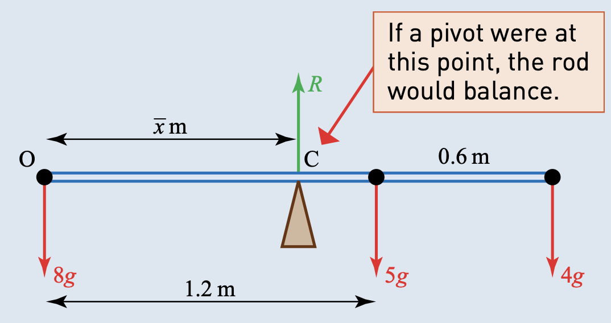
Show answer
Let the centre of mass be \(\bar{x}\) m from \(O\). The total mass is \(17\) kg. Taking moments about \(O\),
\[ 17g\bar{x}=5g(1.2)+4g(1.8)=13.2g. \]
Therefore
\[ \boxed{\bar{x}=\frac{13.2}{17}=0.776\text{ m}}. \]Example 3.2 · A uniform rod with masses at its ends
A uniform rod of length \(2\) m has mass \(5\) kg. Masses of \(4\) kg and \(6\) kg are fixed at each end of the rod. Find the centre of mass of the rod.
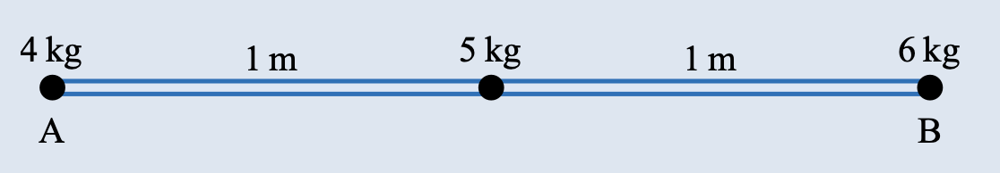
Show answer
Taking the end \(A\) as origin, the uniform rod can be represented by a \(5\) kg mass at its centre.
\[ (4+5+6)\bar{x}=4(0)+5(1)+6(2). \]
Hence
\[ 15\bar{x}=17 \quad\Longrightarrow\quad \boxed{\bar{x}=\frac{17}{15}=1.13\text{ m from }A}. \]Example 3.3 · Adding a mass to a rod
A rod \(AB\) of mass \(1.1\) kg and length \(1.2\) m has its centre of mass \(0.48\) m from the end \(A\). What mass should be attached to the end \(B\) to ensure that the centre of mass is at the midpoint of the rod?
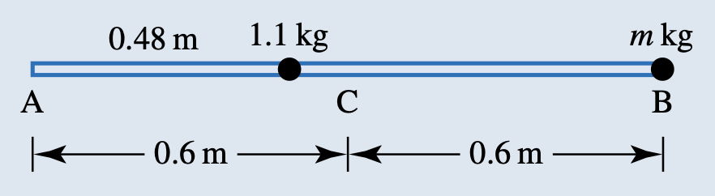
Show answer
Take the midpoint \(C\) as origin. The existing centre of mass is \(0.12\) m to the left of \(C\) and the added mass \(m\) is \(0.6\) m to the right.
\[ (1.1+m)(0)=1.1(-0.12)+m(0.6). \]
Thus
\[ 0.6m=0.132 \quad\Longrightarrow\quad \boxed{m=0.22\text{ kg}}. \]Example 3.4 · A squash racquet
A squash racquet of mass \(200\) g and total length \(70\) cm consists of a handle of mass \(150\) g, whose centre of mass is \(20\) cm from the end, and a frame of mass \(50\) g, whose centre of mass is \(55\) cm from the end. Find the distance of the centre of mass from the end of the handle.
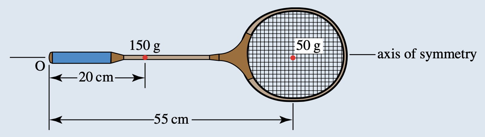
Show answer
Use kilograms and metres, or use grams and centimetres consistently. Taking moments about the end \(O\),
\[ (0.15+0.05)\bar{x}=0.15(0.20)+0.05(0.55). \]
Therefore
\[ \boxed{\bar{x}=0.288\text{ m}=28.8\text{ cm}}. \]Example 3.5 · A pendant in the shape of a letter J
Joanna makes herself a pendant in the shape of a letter J, made up of rectangular shapes as shown in the diagram.
(i) Find the position of the centre of mass of the pendant.
The pendant is hung from a point \(P\) in the middle of \(AB\).
(ii) Find the angle that \(AB\) makes with the horizontal.
Joanna wishes to hang the pendant so that \(AB\) is horizontal.
(iii) How far along \(AB\) should she place the ring through which the suspending chain will pass?
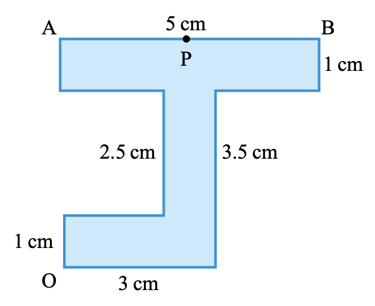
Show answer
Split the pendant into three rectangles. Their areas, and hence masses in suitable units, are
\[ m_1=5,\qquad m_2=2.5,\qquad m_3=3,qquad M=10.5. \]
The rectangle centres are at \((2.5,4)\), \((2.5,2.25)\) and \((1.5,0.5)\).
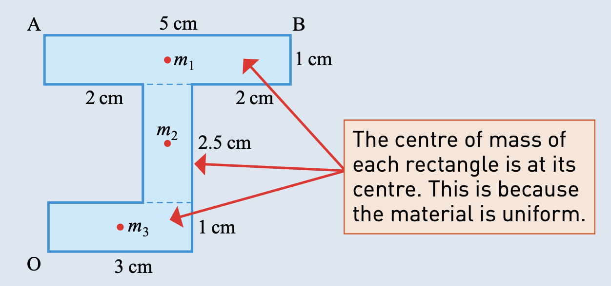
(i)
\[ \bar{x}=\frac{5(2.5)+2.5(2.5)+3(1.5)}{10.5}=\boxed{2.21\text{ cm}}, \]
\[ \bar{y}=\frac{5(4)+2.5(2.25)+3(0.5)}{10.5}=\boxed{2.58\text{ cm}}. \]
(ii) When suspended from \(P\), \(G\) is vertically below \(P\). With \(P=(2.5,4.5)\),
\[ GQ=2.5-2.21=0.29, \qquad PQ=4.5-2.58=1.92. \]
Therefore
\[ \tan\alpha=\frac{0.29}{1.92} \quad\Longrightarrow\quad \boxed{\alpha=8.6^\circ}. \]
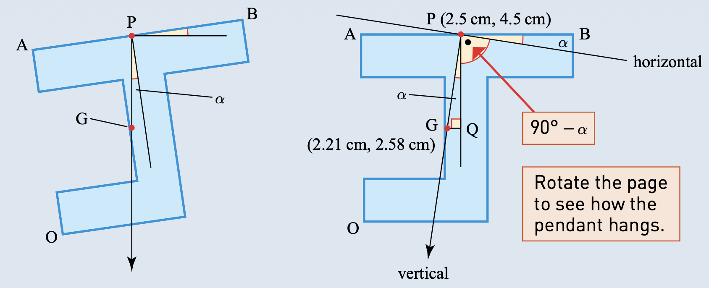
(iii) For \(AB\) to be horizontal, the suspension point must be vertically above \(G\). Hence the ring is placed
\[ \boxed{2.21\text{ cm from }A}. \]Example 3.6 · A square plate with point masses
Find the centre of mass of a body consisting of a square plate of mass \(3\) kg and side length \(2\) m, with small objects of mass \(1\) kg, \(2\) kg, \(4\) kg and \(5\) kg at the corners of the square.
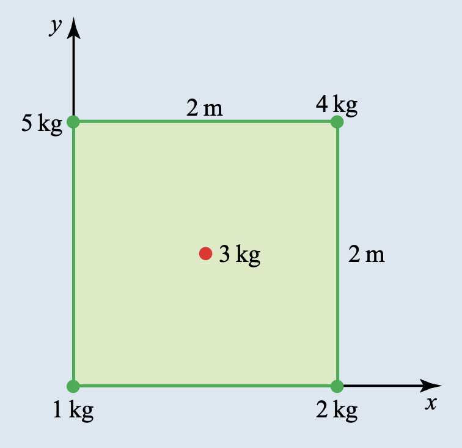
Show answer
The \(3\) kg plate is represented by a \(3\) kg point mass at \((1,1)\). The total mass is \(15\) kg.
\[ 15\begin{pmatrix}\bar{x}\\\bar{y}\end{pmatrix} =1\begin{pmatrix}0\\0\end{pmatrix} +2\begin{pmatrix}2\\0\end{pmatrix} +4\begin{pmatrix}2\\2\end{pmatrix} +5\begin{pmatrix}0\\2\end{pmatrix} +3\begin{pmatrix}1\\1\end{pmatrix} =\begin{pmatrix}15\\21\end{pmatrix}. \]
Therefore
\[ \boxed{(\bar{x},\bar{y})=(1,1.4)}. \]Example 3.7 · A disc with a circular hole
A metal disc of radius \(15\) cm has a hole of radius \(5\) cm cut from it, as shown in the diagram. Find the centre of mass of the disc.
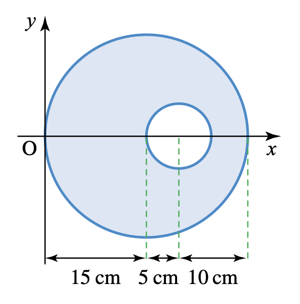
Show answer
The centre of mass lies on the \(x\)-axis by symmetry. Treat the original disc as the final body plus the removed disc.
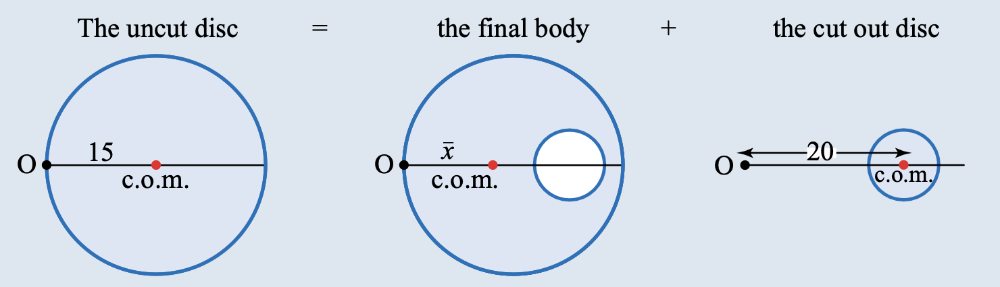
Taking moments about \(O\),
\[ 225\pi(15)=200\pi\bar{x}+25\pi(20). \]
Hence
\[ \bar{x}=\frac{225(15)-25(20)}{200}=\boxed{14.4\text{ cm from }O}. \]
The centre of mass is therefore \(0.6\) cm to the left of the centre of the original disc.Example 3.8 · A triangular lamina
Find the coordinates of the centre of mass of a uniform triangular lamina with vertices at \(A(4,4)\), \(B(1,1)\) and \(C(5,1)\). If the lamina is suspended from \(A\), find the angle that the line \(BC\) makes with the horizontal.
Show answer
The midpoint of \(BC\) is \(M=(3,1)\). The centre of mass \(G\) is two-thirds of the way down the median \(AM\).
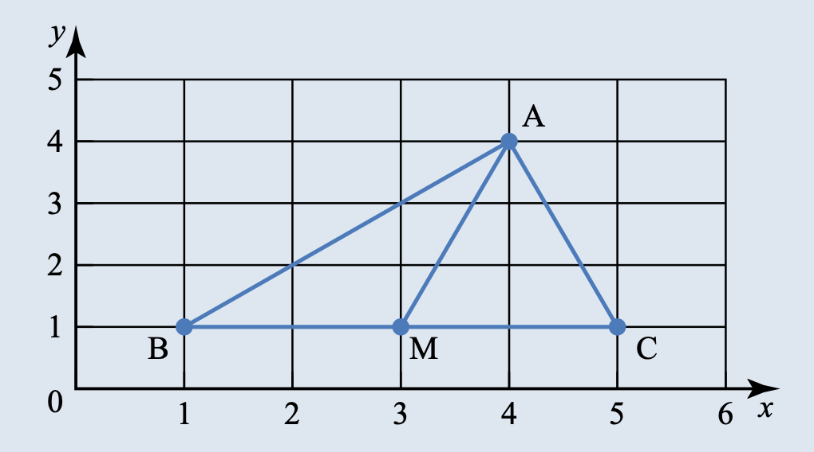
Thus
\[ G=\left(4-\frac23(4-3),\ 4-\frac23(4-1)\right) =\boxed{\left(3\frac13,2\right)}. \]
When the lamina is suspended from \(A\), \(AG\) is vertical. Since the horizontal displacement is \(4-3\frac13=\frac23\) and the vertical displacement is \(4-2=2\),
\[ \tan\theta=\frac{2/3}{2}=\frac13 \quad\Longrightarrow\quad \boxed{\theta=18.4^\circ}. \]
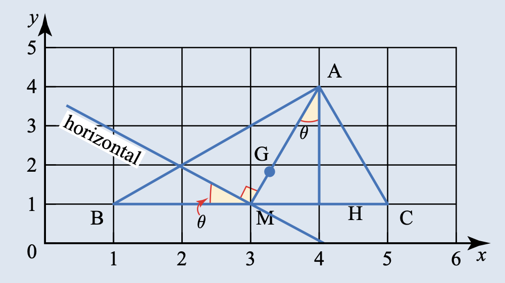
Example 3.9 · A composite uniform lamina
Find the centre of mass of the uniform lamina illustrated in the diagram.
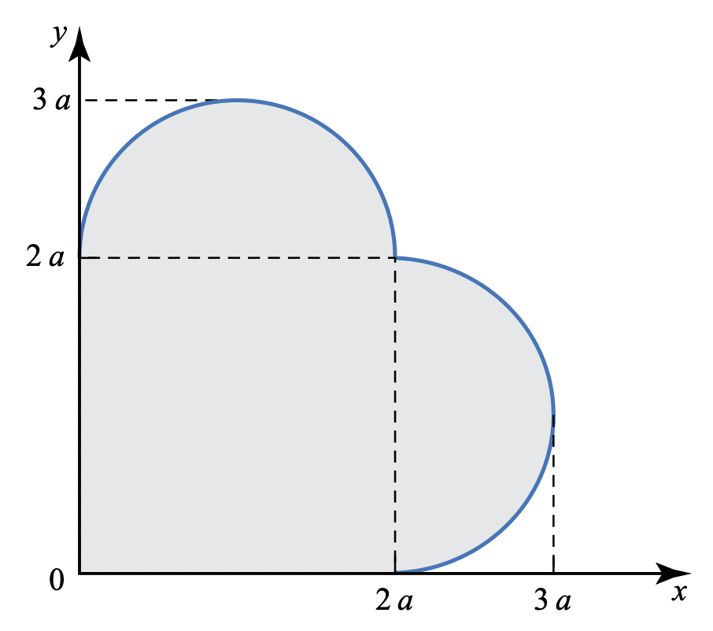
Show answer
The shape is symmetric about \(y=x\), so the centre of mass is \((\bar{x},\bar{x})\). It consists of a square of side \(2a\) and two semicircles of radius \(a\).
The square has area \(4a^2\) and centre \((a,a)\). Each semicircle has area \(\frac12\pi a^2\); its centre of mass is a distance \(\frac{4a}{3\pi}\) from the diameter.
Taking moments for the \(x\)-coordinate,
\[ (4+\pi)a^2\bar{x} =4a^2(a)+\frac12\pi a^2\left(a+\frac{4a}{3\pi}\right) +\frac12\pi a^2\left(2a+\frac{4a}{3\pi}\right). \]
Therefore
\[ \boxed{\bar{x}=\frac{a(28+9\pi)}{6(4+\pi)}=1.31a}, \]
and the centre of mass is
\[ \boxed{(1.31a,1.31a)}. \]Example 3.10 · Sliding or toppling
An increasing force \(P\) N is applied to a block, as shown in the diagram, until the block moves. The coefficient of friction between the block and the plane is \(0.4\). Does it slide or topple?
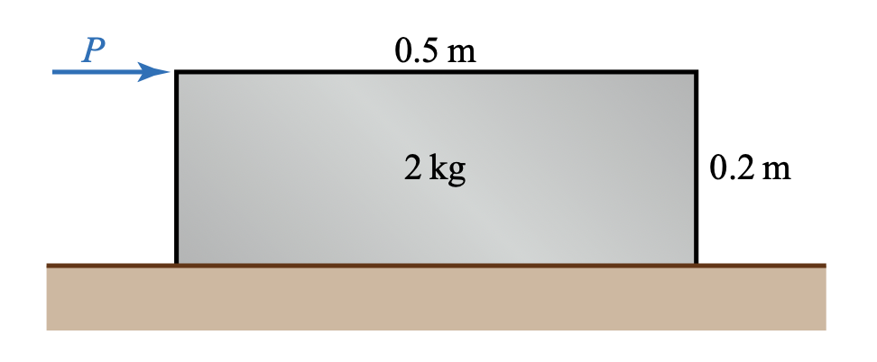
Show answer
Until the block moves,
\[ P=F,qquad R=2g. \]
If sliding is about to occur,
\[ P=F=\mu R=0.4(2g)=\boxed{8\text{ N}}. \]
If toppling is about to occur, take moments about the edge \(A\):
\[ 2g(0.25)-P(0.2)=0 \quad\Longrightarrow\quad P=\boxed{25\text{ N}}. \]
Since \(8<25\), the block will
\[ \boxed{\text{slide before it topples}}. \]
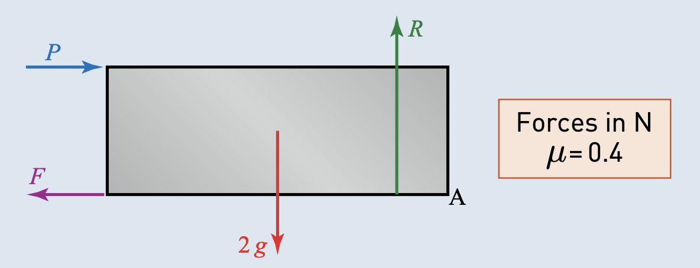
Example 3.11 · A block on a slope
A rectangular block of mass \(3\) kg is placed on a slope as shown. The angle \(\alpha\) is gradually increased. What happens to the block, given that the coefficient of friction between the block and the slope is \(0.6\)?
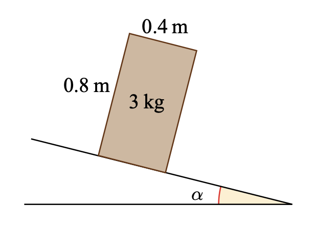
Show answer
For possible sliding,
\[ F=3g\sin\alpha,qquad R=3g\cos\alpha. \]
At limiting equilibrium, \(F=\mu R\), so
\[ \tan\alpha=\mu=0.6 \quad\Longrightarrow\quad \alpha=\boxed{31.0^\circ}. \]
For possible toppling about the lower edge \(E\), the centre of mass must be vertically above \(E\). Hence
\[ \tan\alpha=\frac{0.4}{0.8}=0.5 \quad\Longrightarrow\quad \alpha=\boxed{26.6^\circ}. \]
Since toppling occurs at the smaller angle, the block will
\[ \boxed{\text{topple without sliding at }\alpha=26.6^\circ}. \]
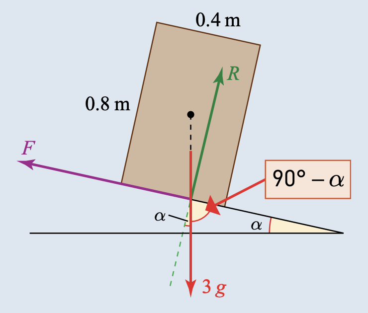
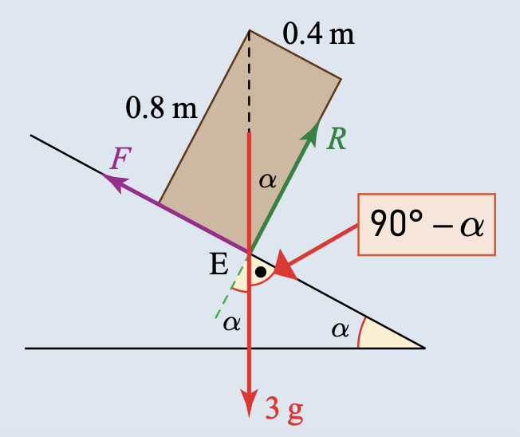
3. 教材中标注 Cambridge International 的题目
本节收录 Further Mechanics Chapter 3 Exercise 3B 与 Exercise 3C 中明确标注 Cambridge International 来源的题目。题目保持教材原始英文，图像使用 Pic 文件夹中的独立图片；每个 (i)、(ii)、(a)、(b) 小问都单独列出。
A uniform lamina \(ABC\) is in the form of a major segment of a circle with centre \(O\) and radius \(0.35\) m. The straight edge of the lamina is \(AB\), and angle \(AOB=\frac23\pi\) radians (see diagram).
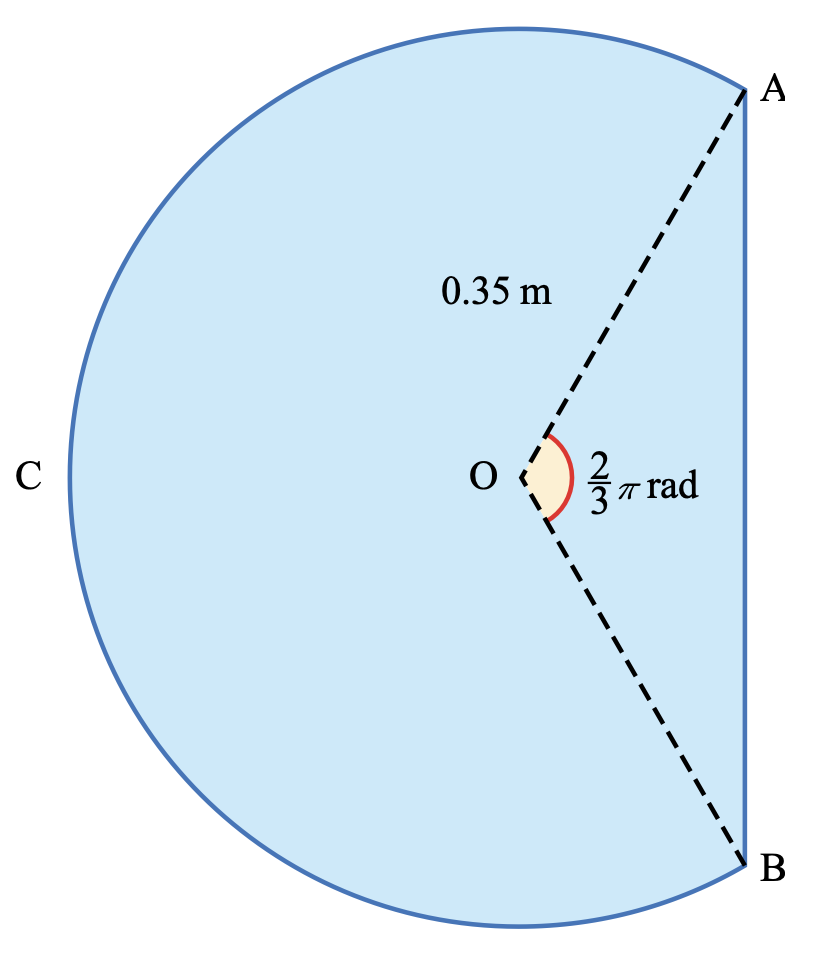
(i) Show that the centre of mass of the lamina is \(0.0600\) m from \(O\), correct to \(3\) significant figures.
The weight of the lamina is \(14\) N. It is placed on a rough horizontal surface with \(A\) vertically above \(B\) and the lowest point of the arc \(BC\) in contact with the surface. The lamina is held in equilibrium in a vertical plane by a force of magnitude \(F\) N acting at \(A\).
(ii) Find \(F\) in each of the following cases:
(a) the force of magnitude \(F\) N acts along \(AB\);
(b) the force of magnitude \(F\) N acts along the tangent to the circular arc at \(A\).
Show answer
(i) Let \(r=0.35\) m. Treat the major segment as the complete circle minus the minor segment. The minor segment is the sector minus triangle \(AOB\).
The area of the major segment is
\[ A=r^2\left(\frac{2\pi}{3}+\frac{\sqrt3}{4}\right). \]
Using the centre of mass of a sector and the centroid of triangle \(AOB\), the moment of the removed minor segment about \(O\) is \(\frac{\sqrt3}{4}r^3\). Therefore
\[ d=\frac{\frac{\sqrt3}{4}r^3}{r^2\left(\frac{2\pi}{3}+\frac{\sqrt3}{4}\right)} =\boxed{0.0600\text{ m}}. \]
(ii)(a) Taking moments about the contact point \(C\), the weight has moment \(14d\) and the force along \(AB\) has perpendicular distance \(r/2\):
\[ F\left(\frac r2\right)=14d \quad\Longrightarrow\quad \boxed{F=4.8\text{ N}}. \]
(ii)(b) The perpendicular distance from \(C\) to the tangent at \(A\) gives
\[ \boxed{F=1.29\text{ N}}. \]The diagram shows a circular object formed from a uniform semi-circular lamina of weight \(11\) N and a uniform semi-circular arc of weight \(9\) N. The lamina and arc both have centre \(O\) and radius \(0.7\) m and are joined at the ends of their common diameter \(AB\).
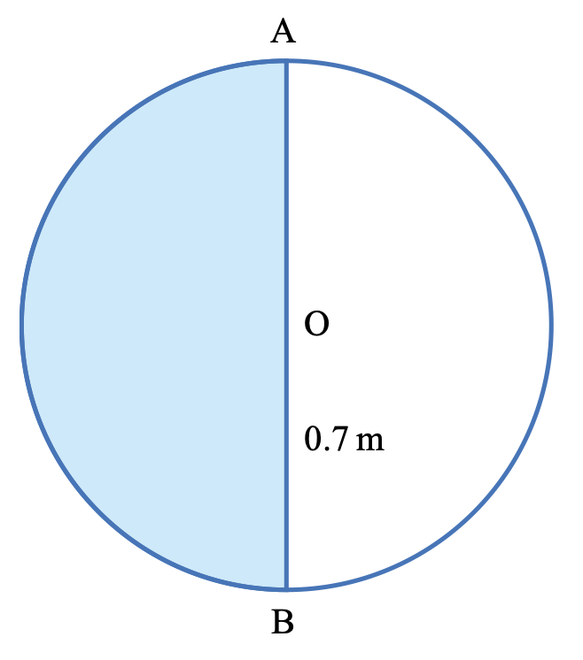
(i) Show that the distance of the centre of mass of the object from \(O\) is \(0.0371\) m, correct to \(3\) significant figures.
The object hangs in equilibrium, freely suspended at \(A\).
(ii) Find the angle between \(AB\) and the vertical and state whether the lowest point of the object is on the lamina or on the arc.
Show answer
The centre of mass of a semi-circular lamina is \(\frac{4r}{3\pi}\) from \(O\), while the centre of mass of a semi-circular arc is \(\frac{2r}{\pi}\) from \(O\) in the opposite direction. Taking moments about \(O\),
\[ 20\,OG =9\left(\frac{2r}{\pi}\right)-11\left(\frac{4r}{3\pi}\right) =0.742\text{ N m}. \]
Dividing by the total weight \(20\) N gives
\[ \boxed{OG=0.0371\text{ m}}. \]
When suspended from \(A\), \(G\) is vertically below \(A\). Since \(AO=r=0.7\) m,
\[ \tan\theta=\frac{0.0371}{0.7} \quad\Longrightarrow\quad \boxed{\theta=3.04^\circ}. \]
The lowest point is on the
\[ \boxed{\text{arc}}. \]A uniform solid is made from a cylinder and a cone, both with radius \(0.5\) m and height \(0.4\) m. The circular base of the cone is attached to a circular face of the cylinder, with their circumferences coinciding. The solid rests in equilibrium with the circular face of the solid on a rough horizontal surface (see diagram).
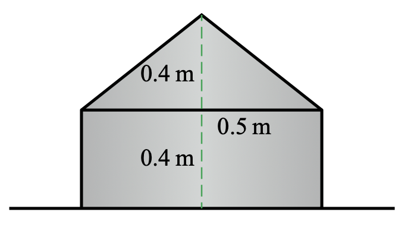
(i) Show that the centre of mass of the solid is \(0.275\) m above the surface.
The weight of the solid is \(60\) N. A horizontal force of increasing magnitude \(P\) N is applied to the vertex of the cone, which causes the solid eventually to topple without sliding.
(ii) Calculate the value of \(P\) for which the solid is on the point of toppling.
(iii) Find the least possible value for the coefficient of friction between the solid and the surface.
The force of magnitude \(P\) is removed, and the solid is held with the curved surface of the cylinder in contact with the horizontal surface. The horizontal surface is then tilted so that it makes an angle of \(30^\circ\) with the horizontal. The solid is released with its axis of symmetry parallel to a line of greatest slope and the conical portion pointing down the slope.
(iv) Show that the solid does not slide, but does topple.
Show answer
The cylinder and cone have volume ratio \(3:1\), so their weights are \(45\) N and \(15\) N. Their centres of mass are \(0.2\) m and \(0.5\) m above the supporting face. Thus
\[ \bar{y}=\frac{45(0.2)+15(0.5)}{60}=\boxed{0.275\text{ m}}. \]
(ii) At toppling, take moments about the edge of the circular base:
\[ P(0.8)=60(0.5) \quad\Longrightarrow\quad \boxed{P=37.5\text{ N}}. \]
(iii) At toppling the friction must provide \(P\), while the normal reaction is \(60\) N. Hence
\[ \mu\ge\frac{37.5}{60} \quad\Longrightarrow\quad \boxed{\mu_{\min}=0.625}. \]
(iv) On the \(30^\circ\) slope, the component down the slope is
\[ 60\sin30^\circ=30\text{ N}. \]
The available limiting friction is at least \(0.625(60\cos30^\circ)=32.5\) N, so the solid does not slide. The line of action of the weight passes outside the supporting contact region before sliding occurs, so the solid
\[ \boxed{\text{topples without sliding}}. \]4. Paper 3 真题题库
本节先列出独立的 centre-of-mass 真题；涉及 equilibrium、friction 或 toppling 的综合题保留在同一网站的刚体平衡真题页，并在真题页底部完成了年份与试卷核对。
2021 May/June · 9231/33 · Question 1
A uniform lamina \(ABCD\) consists of two isosceles triangles \(ABD\) and \(BCD\). The diagonals of \(ABCD\) meet at the point \(O\). The length of \(AO\) is \(3a\), the length of \(OC\) is \(6a\) and the length of \(BD\) is \(16a\) (see diagram).
Find the distance of the centre of mass of the lamina from \(DB\).
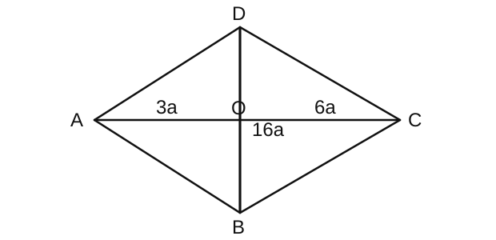
Show answer
Split the lamina into the two triangles \(ABD\) and \(BCD\). Since they have the same base \(BD\), their areas are in the ratio of their heights:
\[ A_{ABD}:A_{BCD}=3a:6a=1:2. \]
The centroid of a triangle is one-third of the perpendicular distance from its base to the opposite vertex. Therefore, measured from \(DB\) and taking the side containing \(A\) as negative,
\[ \begin{array}{c|c|c} \text{part} & \text{area} & \text{distance of centre of mass from }DB\\ \hline ABD & 24a^2 & -a\\ BCD & 48a^2 & 2a\\ \text{combined} & 72a^2 & x \end{array} \]
Taking moments about \(DB\),
\[ 72a^2x=24a^2(-a)+48a^2(2a). \]
Hence
\[ \boxed{x=a}. \]2022 May/June · 9231/33 · Question 1
A uniform lamina \(OABC\) is a trapezium whose vertices can be represented by coordinates in the \(x\)-\(y\) plane. The coordinates of the vertices are \(O(0,0)\), \(A(15,0)\), \(B(9,4)\) and \(C(3,4)\).
Find the \(x\)-coordinate of the centre of mass of the lamina.
Show answer
Split the trapezium into a rectangle and two triangles:
\[ \begin{array}{c|c|c} \text{part} & \text{area} & \text{$x$-coordinate of centre of mass}\\ \hline \triangle OCD & 6 & 2\\ \text{rectangle }DEBC & 24 & 6\\ \triangle BAE & 12 & 11\\ \text{trapezium }OCBA & 42 & x \end{array} \]
Taking moments about the \(y\)-axis,
\[ 42x=6(2)+24(6)+12(11)=288. \]
Therefore
\[ \boxed{x=\frac{288}{42}=\frac{48}{7}=6.86}. \]Mixed centre-of-mass and equilibrium questions
The following Paper 3 questions also test centre of mass, but their later parts require equilibrium, friction or toppling. They are kept in full on the Equilibrium of a rigid body question bank, so the question wording, diagrams and multi-part Mark Scheme answers are not duplicated here:
- 2021 May/June: 9231/31 and 9231/32 Q4;
- 2021 October/November: 9231/31 Q4 and 9231/32 Q4;
- 2022 May/June: 9231/31 and 9231/32 Q4;
- 2022 October/November: 9231/32 Q2 and 9231/31 & 9231/33 Q3;
- 2023 May/June: 9231/31 & 9231/32 Q4 and 9231/33 Q3;
- 2023 October/November: 9231/31 & 9231/33 Q3 and 9231/32 Q3;
- 2024 May/June: 9231/33 Q5;
- 2024 October/November: 9231/31 & 9231/33 Q4 and 9231/32 Q4;
- 2025 May/June: 9231/31 & 9231/32 Q4 and 9231/33 Q4;
- 2025 October/November: 9231/31 & 9231/33 Q5 and 9231/32 Q3.
This cross-reference is the completeness check for the centre-of-mass questions found in the available 9231 Paper 3 question papers: the two standalone questions above are presented here, and every mixed question is retained in the linked Paper 3 question bank.
5. 本章检查清单
- 先选 reference axis/origin，再写每个 component 的 centre of mass 坐标；
- 组合物体要同时检查 total mass/area 和 total moment；
- removed part 的 moment 使用负号；
- 三角形的 centroid 是从顶点量 \(2/3\) median，或从底边量 \(1/3\) height；
- semicircular lamina 与 semicircular arc 的标准距离不同；
- 悬挂问题中，\(G\) 必须在 suspension point 的正下方；
- toppling 问题中，取矩点应选 supporting edge；
- sliding 与 toppling 要比较临界条件，不能只验证其中一个。